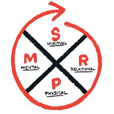
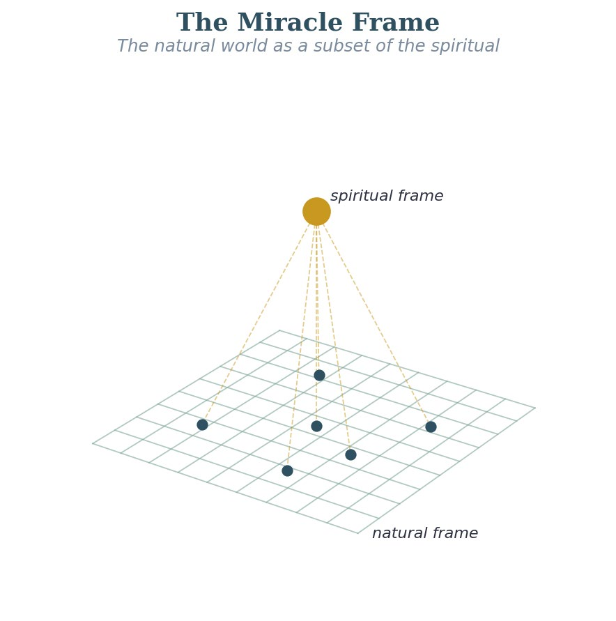
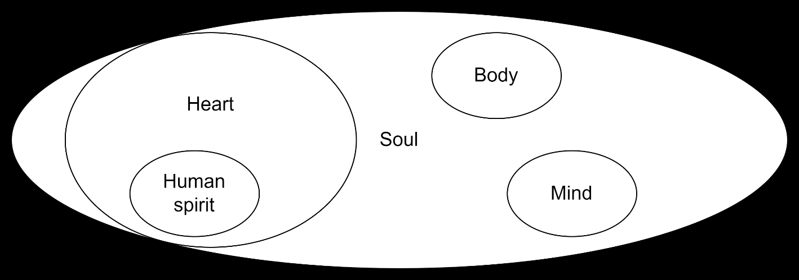
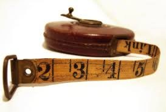

Seven hand-made concept graphics that currently render soft (most are 225–317 px upscaled to full width). For each, pick a treatment — these aren't stock photos, so a free-photo swap usually isn't the right move.
C1 redraw, C2 inset, C3 remove, C4 inset, C5 remove, C6 inset, C7 inset —
or just say "go with your picks." Nothing changes on the live chapters until you decide;
then I apply on dev, you review, and we mirror to prod + preview only on your "mirror."
SMPR quadrants — Spiritual / Mental / Physical / Relational
The diagram you flagged. Current is a 225×225 marker sketch that pixelates badly at reading size. It's a core concept graphic, so I redrew it crisp in the site's burnt-amber accent and Georgia type — same idea (quartered circle, S/R/P/M compass, cycle arrow), now sharp at any size, with a clean legend. Compare:

"Divine Alignment" — plumb-bob over an open book
A gray stock graphic. The next element is prose, so shrinking it to a left float reads cleanly and the softness disappears at native size. Alternative: resource a clean plumb-line photo, or remove.

"Obedience" word cloud (clip-art)
Decorative purple/green word-cloud clip-art — the weakest of the seven and it adds little the chapter title doesn't already say. I'd remove it. If you like it, inset keeps it but small.

Ear + heart + heartbeat line ("hearing with the heart")
A reasonably clean stock graphic that's just too small at full width. The concept fits the chapter, so I'd inset it (keep, shrink). It could also be redrawn if you want it in-palette.
"Container Gardening" web banner — wrong topic
This is a sepia gardening banner, but the chapter is about the therapeutic container — the safe space that holds a person. The image actively misleads. I'd remove it, or resource a fitting picture (cupped hands, a bowl/vessel, "holding space"). Either way, the gardening banner should go.
Road curving up into a sky-arrow (ascent)
Generic but on-metaphor (faith moving forward / upward). Inset is the cheap clean fix; or resource a sharp "open road rising to bright sky" photo if you'd rather replace it. (Same chapter as C1 — I'll touch only C1 & C6 here.)

Abstract energy-orbs / plasma render
Two glowing orbs joined by a beam — on-metaphor for measuring spiritual distance. Next element is prose, so inset wraps cleanly; or resource a sharper abstract light/energy image.
Temporary DEV review page · noindex · removed once Group C lands. Shorthand of my picks: C1 redraw · C2 inset · C3 remove · C4 inset · C5 remove · C6 inset · C7 inset.